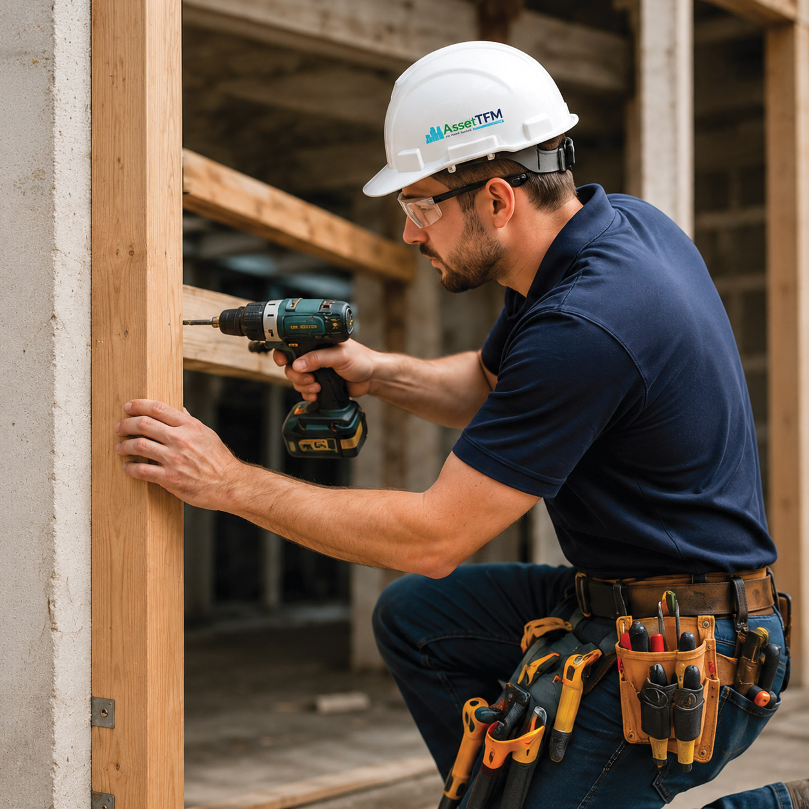

Services: Owners Corporation
Owners Corporation Building Services
Maintenance, reporting and project coordination for common property and shared building environments.
Owners Corporation building services
AssetTFM works with owners corporations and body corporate environments across maintenance, repairs, inspections and planned works.
A broad trade capability and coordinated project approach helps simplify jobs that involve common property, multiple work stages or several trades.
Maintenance and repairs
Our trade services can support one-off works, ongoing maintenance and larger projects. Services include, but are not limited to:
- General building maintenance
- Reactive repairs
- Preventative maintenance
- Electrical and plumbing services
- Carpentry
- Painting and plastering
- Tiling and glazing
- Flooring
- Window furnishings
- Concrete and resurfacing
- Landscaping and irrigation
- Signage
- Refurbishment and improvement works
Building reporting
Building inspections and reports can assist owners corporations with understanding:
- Existing defects
- Maintenance priorities
- Repair requirements
- Longer-term asset considerations
- Practical maintenance planning
Reports can include photographic records, recommendations and repair solutions.
Project works
Where works require broader coordination, AssetTFM can assist with scope development, contractor management, site supervision, compliance documentation and handover.

Need help with a common property issue or planned works?
Start with a Service Enquiry for maintenance and repairs, or make a Project Enquiry for larger planned works.